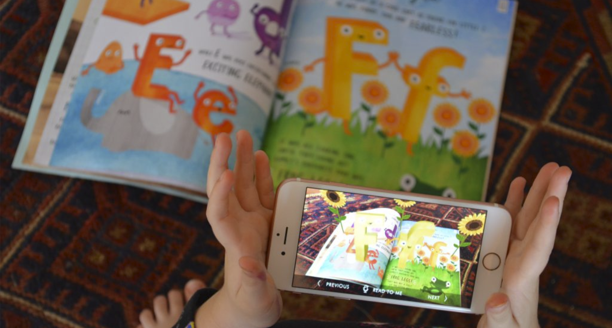

Come Find Me
Terry Crews
Sharing a quote from our client Terry Crews: "20 years ago, 1995 to be exact, Ken Harvey and I were teammates on the NFL’s Washington Redskins. Ken came to me with a brilliant idea of a book he wrote for his two very young sons, Anthony and Marcus. The book was to be a first time reader, and feature the boys in an imaginative game of hide and seek.
